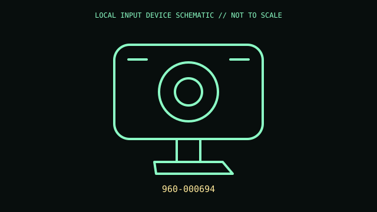

[ IMAGING AND AUDIO-CAPTURE PERIPHERALS // IDENTIFIED COMPONENT ]
Logitech C270 HD Webcam
Fixed-focus USB webcam with integrated microphone for video calls.

MODEL IDENTIFICATION: 960-000694. Confirm complete SKU, package, region, and revision before compatibility claims.
Model specifications
| Catalog leaf | Imaging and audio-capture peripherals |
|---|---|
| Exact model / identifier | 960-000694 |
| Physical mechanism and primary specifications | HD 720p video up to 30 fps under supported conditions; USB-A wired; built-in mono microphone; fixed-focus lens and monitor clip. |
| Compatibility and interface caveats | UVC support and image controls depend on OS/app and USB path; verify PID because C270 revisions and regional bundles vary. It is not a 1080p camera. |
| Revision identification | Record full product label, software/firmware version, and supplied accessories. Product-family versions may differ in connector, protocol, features, or host requirements. |
Preservation and service
Keep lens clean with microfiber; avoid pulling on captive cable and preserve monitor clip; do not apply solvent to lens coating.
Record condition and test setup separately from vendor specifications, including host OS and software.
Primary manufacturer sources
- Logitech C270 productManufacturer documentation; confirm exact PID, regional suffix, and hardware revision on the unit.
- Logitech C270 supportManufacturer documentation; confirm exact PID, regional suffix, and hardware revision on the unit.
Retain relevant manual revisions with the equipment record; vendor support pages can change.